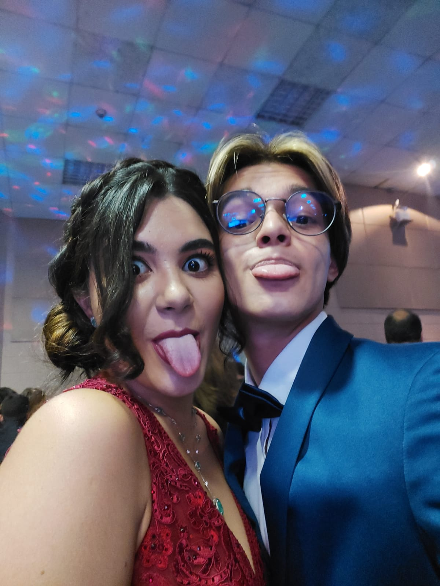
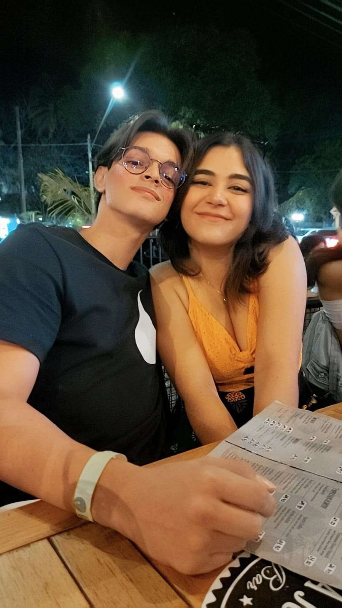
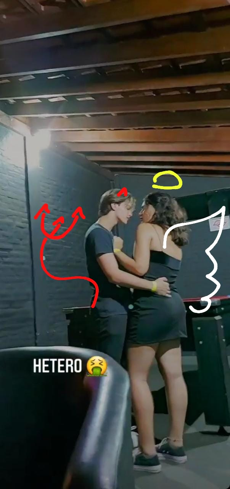
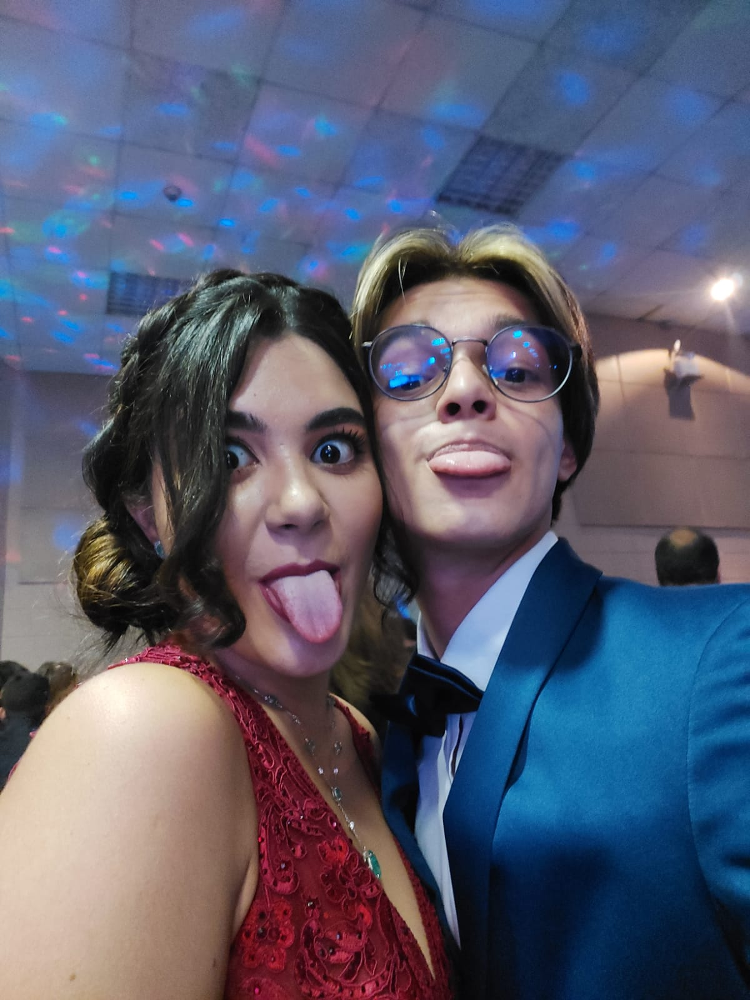
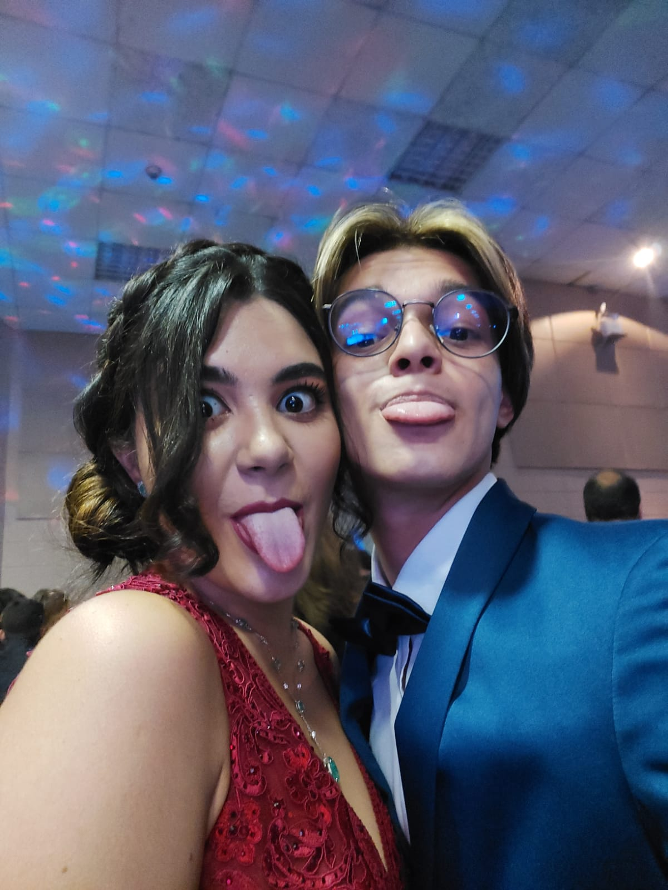
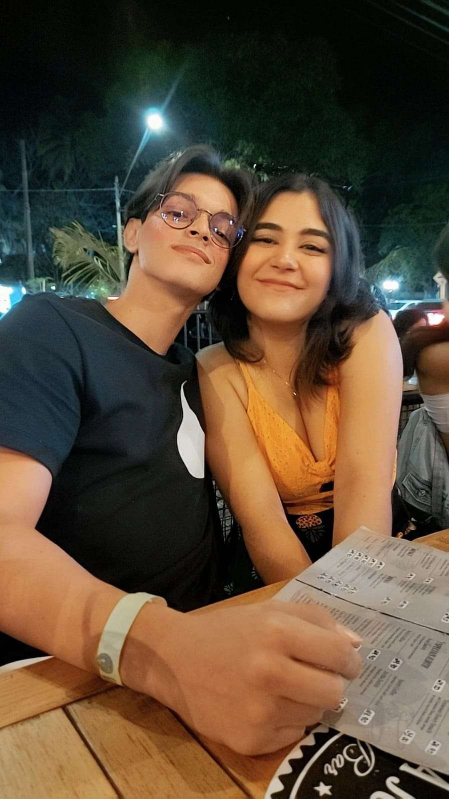
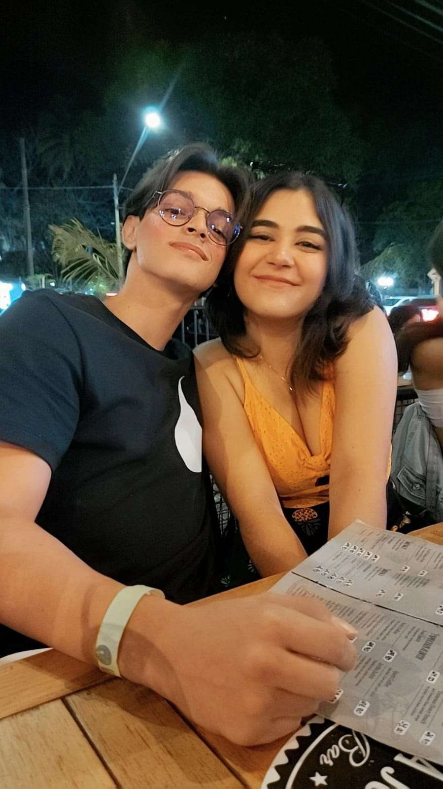

You're just too good to be true
Can't take my eyes off of you
You'd be like Heaven to touch
I wanna hold you so much
At long last, love has arrived
And I thank God I'm alive
You're just too good to be true
Can't take my eyes off of you
Pardon the way that I stare
There's nothin' else to compare
The sight of you leaves me weak
There are no words left to speak
But if you feel like I feel
Please let me know that it's real
You're just too good to be true
Can't take my eyes off of you
I love you, baby
And if it's quite alright
I need you, baby
To warm the lonely night
I love you, baby
Trust in me when I say
Oh, pretty baby
Don't bring me down, I pray
Oh, pretty baby
Now that I've found you, stay
And let me love you, baby
Let me love you
You're just too good to be true
Can't take my eyes off of you
You'd be like Heaven to touch
I wanna hold you so much
At long last, love has arrived
And I thank God I'm alive
You're just too good to be true
Can't take my eyes off you
I love you, baby
And if it's quite alright
I need you, baby
To warm the lonely night
I love you, baby
Trust in me when I say
Oh, pretty baby
Don't bring me down, I pray
Oh, pretty baby
Now that I've found you, stay
Oh, pretty baby
Trust in me when I say
Oh, pretty baby
Motivos que me apaixonaram no amor da minha vida:
Muito fofinha:
Minha gatinha é inteligente:
O sorriso dela esquenta meu coração:
Nós compartilhamos o mesmo neurônio:

A mulher mais estilosa do mundo:
Fica fofinha fazendo birra:
É brabinha e ciumenta:
Álem de ser namorada, sempre foi minha melhor amiga:
A mulher mais linda,espetacular e deslumbrante que esse planeta já viu:
Muito fofoqueira:
Cuida de mim:
Simplismente a minha mulher pro resto da vida:

Coisas que ainda quero fazer juntinho de você:
Nadar em uma cachoeira:
Brincar na neve:
Viajar o mundo:
Fazer piquinique:
Ir a um show:
Viajar de carro:
Dançar na chuva:
Ter uma familia:
Envelhecer juntos:
Fotos nossas e seus significados pra mim:
A primeira vez que assistimos filme abraçadinhos (estava nervoso pois eu sonhava com isso hà dois anos)
Primeira vez que saimos em com nossos amigos como namorados (eu amei cada segundo e cada vez que você me chamou de amor)
Foto com o professor que sempre considerou nós dois namorados (ele sempre esteve certo kakakakak)
A gente fofocando e falando mal dos outros ( amo, amoe e amo muito kakakakaka)

Nossa primeira data especial juntos (ano novo) e virão muitos mais por ai!!!


 



 
